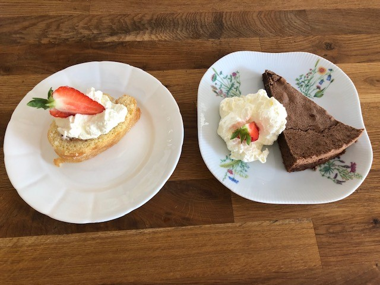
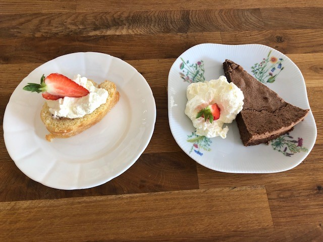
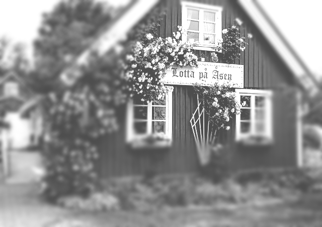

Välkommen till en av Skånes mest berömda kaffestugor
Fika var du vill
Caféet ligger vackert belägen på Söderåsens norrsida i backen ned mot Ljungbyhed.
Välj om du vill njuta av din fika inne eller
ute i vår fina trädgård. Vi har även några sittplatser ute som är skyddade mot väder
och vind.
Se mer i vårt
GalleriI vår härliga trädgård
Njut av
Fika
Många sittplatser
 

Här finns
Något för alla
På vår meny hittar du något som passar alla.
Vi har alltid alternativ anpassade för allergier eller för dig som till exempel har valt att äta vegetarisk eller vegansk kost.
Läs mer under vår
MenyVi bakar med tradition
Vi gör våra våfflor från grunden och tillagar dem efter recept med ursprung från 1800-talet.
Serveras med sylt & grädde!
För just ditt event
Boka Lotta
Vi hjälper dig gärna med ditt företagsevenemang eller din
privata tillställning.
Du kan boka hela lokalen, trädgården eller del av lokalen under hela året.
Kontakta ossVi hjälper dig
Bussresor
Föreningsträffar
Begravningskaffe
Födelsedagar
Möhippa/svensexa Dop m.m.
Anpassat för dig
Vi är ett väletablerat företag som funnits på söderåsen sedan 1978. Det var Lotten Plahn som i samarbete med bussresor startade caféet år 1978.
Huset som caféet ligger i idag härstammar från 1800 - talet och det finns många historier som cirkulerar i bygden om familjen och dessa byggnader. Genom åren är det många besökare från när och fjärran som druckit kaffe och ätit våfflor hos Lotta, en tradition som sträcker sig över flera generationer.
Marianne och Thomas Dahl tog över caféet år 2020 och drev det i egen regi fram till juni 2025. Tillsammans med deras personal erbjöd de äkta gammeldags fika och goda smörgåsar.
1 juli 2025 överläts caféet till familjerna Jönsson (Jönssonligan) som har för avsikt att driva caféet vidare i samma anda som tidigare.
Varmt välkomna hit!
Historien om Lotta
Vi är också välkomna
Utomhus i vår trädgård är det tillåtet att ha
med sig sin skötsamma och kopplade hund
under fikapausen.
Vi bjuder på vatten!
Besök oss på söderåsen

UPPLEVELSER
“Fantastisk natur med spännande lekplatser, äventyrliga vandringsleder för stora och små samt gott om djur, både vilda och tama"
SMAKRIKT
“Här finns många möjligheter att smaka på lokala delikatesser och att ta del av riktigt mathantverk samt möjlighet att köpa råvarorna direkt från
bonden"
KREATIVT
“Runt söderåsen finns flertalet kreativa företagare som bjuder på riktigt hantverk. Här finns också gott om loppisar och olika kurser om du vill vara
kreativ själv"